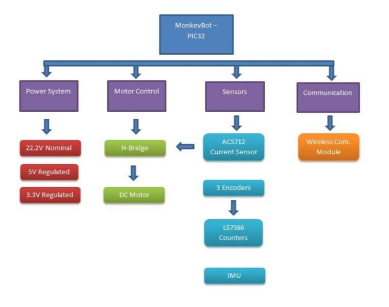
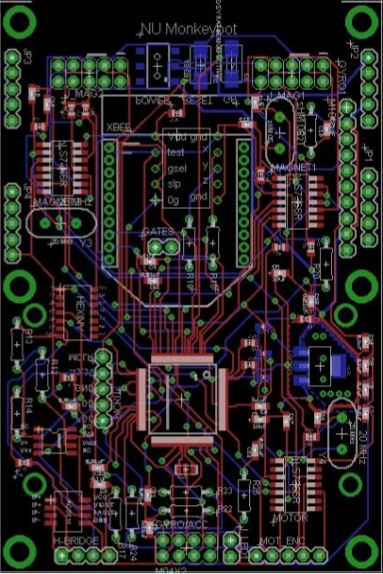

Project Overview
The Gibbot is a two-link brachiating robot designed to climb along vertical walls. It attaches to the wall surface using electromagnets at the end of each link. A DC motor at the pivot provides torque to actuate the robot during its dynamic swinging motion. The energy pumped into the system by this torque should allow the robot to overcome friction and swing side to side or climb. Northwestern University's NxR Lab uses the Gibbot for research in dynamic locomotion of hybrid mechanical systems. As part of a graduate mechatronics course, I was part of a team tasked to redesign the electrical system and controller for the robot.
Hardware Details
 The Gibbot hardware was separated into four subsystems: power, motor control, sensors, and communication. The Gibbot motor and electromagnets require a 22V source, so we decided to use a DC-DC converter to step down to 5V for the control systems power. The converter also provides a better output signal with very low ripple despite any inconsistency in the input. A set of power MOSFETs are used as the switch for the electromagents since they draw very little power in either on or off states and are easy to interface with the PIC.
The sensors that were selected included dual axis accelerometers and gyros mounted on each link of the Gibbot to provide body-frame feedback of the system. Additionally, a current sensor was included on the motor for proper feedback for motor control. Finally, 32-bit counters were used for optical encoders that are present at the electromagnets to measure rotation of the Gibbot endpoints.
Controller Details
 The design of the Gibbot circuit was particularly challenging because of the space limitation based on the existing mechanical device. The amount of space that the main circuit board and electrical components could occupy is 2.4" W x 3.6" L x 1.5" H. In order to add the additional circuitry for the accelerometers and gyro components, we decided early in the design phase to create an integrated circuit board with the PIC included to maximize the amount of room we had to work with.
The second consideration in the circuit design was to try to isolate the high and low voltage circuitry as much as possible. We decided to create a top layer board which would contain the high voltage motor driver and electromagnet inputs as well as the DC-DC converter. The 5V output from the converter is connected to the lower logic board which contains all of the sensors and the PIC.
A basic processing GUI was created to allow a user to quickly setup the Gibbot and set open loop timing values. The GUI also displays a plot of several sensors as the Gibbot program executes. Following the redesign, the Gibbot was able to swing on command in whichever direction desired. The delay times for the open loop swinging motion could also be modified to study different swings. Visual feedback of the sensors was also provided by the Processing GUI. This was all enabled with the addition of the XBee wireless communication module and extra sensors. The PIC32 can also be reprogrammed wirelessly.